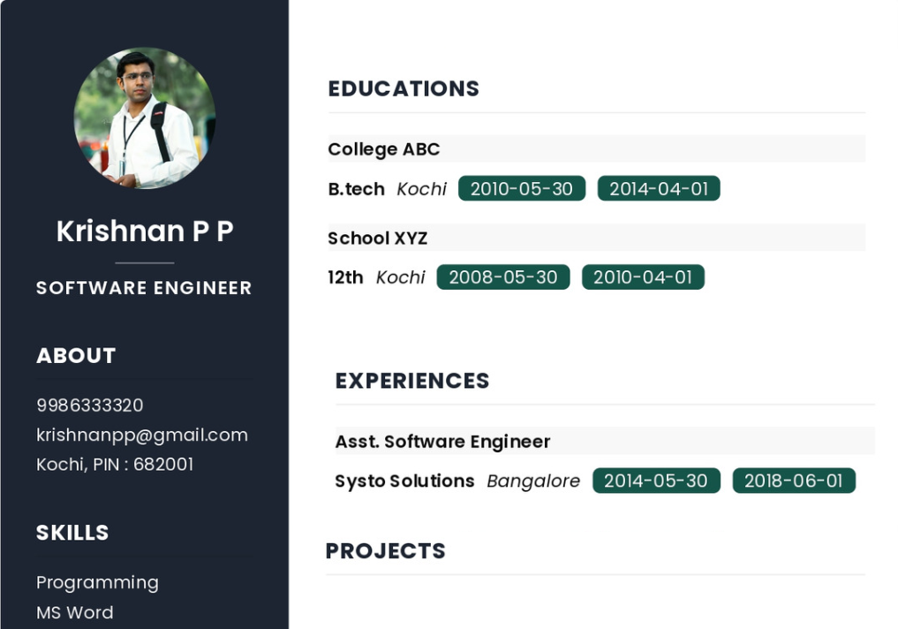

At Resucraft, we believe that a strong resume is the foundation of a successful career. Our platform provides a seamless and user-friendly experience to help you create professional resumes that stand out from the competition.
create my resume Getting that dream job can seem like an impossible task. We're here to change that. Give yourself a real advantage with the best online resume maker: created by experts, imporved by data, trusted by millions of professionals.
Resucraft with its advanced creation tools to tell professional story that engages recruiters, hiring managers and even CEOs.
Resume writing has never been this effortless. Pre-generated text, visual designs and more - all already integrated into the resume maker. Just fill in your details.
Resucraft offers an intuitive and user-friendly interface, making it easy for individuals of all skill levels to create polished and professional resumes.
Resucraft prioritizes the security and privacy of user data. With strict data protection measures in place, users can trust that their personal information and resumes are kept confidential and secure.
This feature lets you see how your resume looks as you make changes. It provides immediate feedback and helps you to visualize the final result, ensuring you can make adjustments accordingly.
Our resume builder and its pre-generated content are tested by recruiters and IT experts. We help your CV become truly competitive in the hiring process.